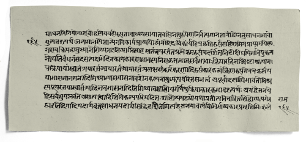
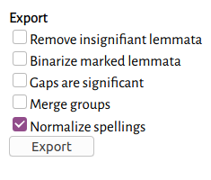
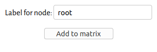
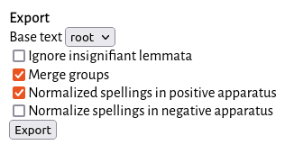

Reconstructing a Pali, Sanskrit, Tamil, or Tibetan text
Charles Li
This document is a companion to the saktumiva GitHub repository, where you will find open source software developed to work with multi-witness texts in Pali, Sanskrit, Tamil, and Tibetan. The software has been used to edit the Śiber upākhāna of the Vahnipurāṇa; a previous iteration of this software was used to edit Bhartṛhari's 5th-century Dravyasamuddeśa along with its 10th-century commentary.
The tutorial assumes some knowledge of both Indic philology, XML, & phylogeny. For a short, gentle introduction to phylogeny, see Baldauf 2003,
Phylogeny for the faint of heart: a tutorial.
This document is licensed under a Creative Commons Attribution 4.0 International License. Its change history can be accessed through GitHub as part of the saktumiva GitHub repository. This is a draft under active revision; it is the latest iteration of both the Upama/Saktumiva project and the Sanskrit Alignment project, the latter of which was published in the Journal of Open Source Software (JOSS 4022). If you have any comments, suggestions, corrections, or other changes, don't hesitate to contact me or to create an issue or submit a pull request.
Table of Contents
- tl;dr
- Introduction
- Setup
- Transcription
- Alignment
- Building a tree To be updated
- Reconstructing a text To be updated
- Creating an edition TODO
- Creating an edition file
- Re-aligning with the edition
- Creating a critical apparatus
- Going further
- Bibliography
tl;dr
- Setup
- create a directory for your project. Create two empty subdirectories:
witnesses/andalignments/. - clone the TST libs into a subdirectory called
lib/. - clone the saktumiva project into a subdirectory called
saktumiva/. - download the
edition.xsl&tei-to-html.xslfiles, and place them in the root directory.
- create a directory for your project. Create two empty subdirectories:
- Transcription
- transcribe your manuscripts in TEI XML, and save them in
witnesses/. Each file needs to have a siglum, and each paragraph or verse to be collated needs to have anxml:id. The TST editor can be used to create a template, or even to transcribe witnesses. Link your transcription to digital images, if possible.
- transcribe your manuscripts in TEI XML, and save them in
- Alignment
- use the TEI Multitext aligner to create alignments of your XML files. Save the alignments in
alignments/. - open your
.xmlfiles in the matrix-editor and fix any big alignment errors. Save each file individually. - open all your
.xmlfiles in the matrix-editor at once (use Ctrl-Click or Shift-Click to select multiple files). Export to NEXUS.
- use the TEI Multitext aligner to create alignments of your XML files. Save the alignments in
- Building a tree
- open your NEXUS file in tree inference software (like SplitsTree6).
- build a tree (or trees) and root it.
- export the tree as NeXML.
- Reconstructing a text
- open the NeXML tree in the matrix-editor.
- make sure that the texts are normalized (
View -> Normalized). - click on the node that you want to reconstruct (probably the root).
- Creating an edition
- create an XML file in your root directory for your critical edition (e.g.,
Ed.xml). - input the critically edited text, using the stemmatic reconstruction as a guide.
- re-align all of your witnesses along with the critical text.
- preview the edition file in a local webserver (e.g., using VSCodium).
- use the
Add/Edit apparatus...
button to create an apparatus. - the file can also be exported to LaTeX and complied with XeLaTeX.
- create an XML file in your root directory for your critical edition (e.g.,
Introduction
Karl Lachmann's stemmatic method has often been derided as overly mechanical
Trovato 2014, 79, 82. by its opponents. But now, centuries later and with our ability to automate mechanical tasks using computers, this is, decidedly, a great virtue. That is not to say that a well-trained philologist is no longer needed in order to edit texts; as this document will show, every step of the process requires careful decision-making on the part of the scholar. However, by offloading much of the work onto computer software, each automated task becomes not only quicker and more accurate, but also, crucially, reproducible. As you will see in this tutorial, given some data (i.e., a set of transcriptions), any scholar will be able to reproduce the steps leading up to a purely stemmatic reconstruction of the text. The final critical text will, undoubtedly, not match this reconstruction completely, not least because, in many cases, the reconstruction will still leave open the possibilty of multiple readings. However, comparing the stemmatic reconstruction with the critical text can initiate a rich discussion on the different scholarly assumptions inherent in the different steps of the process.
There are six main steps in this tutorial:
- Setup, in which a directory structure is created and some files are downloaded,
- Transcription, in which each witness is carefully and diplomatically transcribed,
- Alignment, or Collation, in which the similarities and differences between each witness are tabulated,
- Building a tree, in which the alignment is used to infer a process of textual transmission,
- Reconstructing a text, in which one or more stemmatic reconstructions is created, based on a tree, or multiple trees, and
- Creating an edition, in which a critical text with an apparatus of variants is produced.
Each step in the process — as with all meaning-making — is inherently reductive. From the very moment when we read a manuscript, interpreting marks on a leaf as a sequence of characters from a fixed character set, we are reducing and generalizing its complex material reality in order to extract some meaning from it. As we proceed in the process of transcribing manuscripts, aligning their readings, and editing the text, it is worth keeping in mind the information that is discarded in each step. This tutorial is designed so that the intermediate results of each step are saved, so that, firstly, they can be examined with a critical eye, and secondly, one can easily trace your steps backwards from the edited text all the way to the manuscript images (if available).
Setup
This tutorial will describe the typical setup for a critial edition project. However, all of the tools described here can be used independently, and for different purposes and kinds of projects. At the end of this tutorial, you will have produced a critical edition with an apparatus of variants, linked to transcriptions of all witnesses, as well as images of those witnesses if available. This edition can be put online and/or exported to LaTeX for printing.
Directory structure
Some knowledge of git is required. For help with cloning, see Cloning a repository. if your directory is also a git repository, you can optionally create submodules for the TST libs and for saktumiva.
Create a directory for your project, and then create two empty subdirectories, witnesses/ and alignments/. Then, download or clone the TST libs into a subdirectory called lib/. Download or clone the saktumiva project into a subdirectory called saktumiva/. Finally, download the edition.xsl & tei-to-html.xsl files, and place them in the root directory.
Your project directory should look like this:
alignments/lib/saktumiva/witnesses/edition.xsltei-to-html.xsl
You should not modify anything in the lib/ and saktumiva/ directories, nor should you change the two .xsl files. These directories and files are used to display the transcriptions and edition in a web browser.
Transcription
 Rajasthan Oriental Research Institute, MS 4781. The most arduous task in this process is the collection of witnesses and their transcription. Previously, transcribing each witness individually was considered to be too daunting a task; when a text is collated by hand, the editor only notes the differences between a witness and their edition. But in this process, a lot of information is lost: orthography and punctuation are ignored, and any variant readings that are considered insignificant are not mentioned. Moreover, marginal and interlineal corrections might have been ignored. But with computer-aided collation, we can create diplomatic transcriptions of our witnesses and then automatically filter out variations that we wish to ignore.
Are your images online?
In recent years, there have been a number of manuscript digitization initiatives that have revolutionized the field of philology. Many manuscripts and old books can be found online at websites such as the Endangered Archives Project, the TST Project, Gallica, the Münchener DigitalisierungsZentrum Digitale Bibliothek, the Buddhist Digital Resource Center, the Tamil Digital Library, the SP Lohia Foundation, or digitized by projects such as eGangotri or institutions like the Universty of Toronto and hosted by Archive.org. If these websites provide a IIIF manifest, then you can link your transcriptions to your images. Alternatively, you can upload your images to a service like Archive.org or Zenodo, which provide IIIF manifests, depending on the copyright status of your images.
Transcription conventions
For Pali & Sanskrit texts, all witnesses should be transcribed in IAST, with these exceptions, borrowed from ISO 15919:
- the vowel l:
l̥ - the retroflex consonant la:
ḷ - ya with dot below:
ẏ(Devanagari, Bengali)
In addition, Devanagari pṛṣṭhamātras can be transcribed with ê, âi, ô, âu. Spaces can be added between words where possible, and an underscore or middot can be used to indicate an explicit virāma.
For Tamil texts, witnesses can be transcribed either in Unicode Tamil script or in Madras lexicon transliteration (similar to IAST). In transliteration, vowels are interpreted as independent vowel signs if they are at the beginning of a paragraph/verse line or if they are preceded by a space or punctuation.
For Tibetan texts, witnesses can be transcribed either in Unicode Tibetan script or in Wylie transliteration.
Describing a (manuscript) witness
Each witness should be a TEI XML file, with some metadata about the witness (see this template: template.xml). The easiest way to start is by using the TST editor.
Although the TST editor was created to produce manuscript catalogue entries for the TST Project, it can also be used to produce TEI XML transcriptions. Navigate to tst-project.github.io/editor, then:
- click on
new file.
- fill in, at a minumum, the fields that are marked in red.
- if your images are online, you can put the URL of the IIIF manifest in the
IIIF manifest
field. - in the
Text id
field of theContents
section, put the siglum of your witness (e.g.,A
). - At the bottom of the editor window, under
Text transcription
, click the+button to start a new transcription. - In the
Textual unit(s)
dropdown box, select the siglum that you gave for this witness (e.g.,A
).
For more information on using the editor, as well as describing manuscripts, IIIF manifests, and transcription conventions, see the TST Encoding Guide.
When producing your transcriptions, each paragraph or verse (<p> or <lg>) should have a unique id, so that the alignment software knows how to collate them. For examples, see the TEI XML transcriptions of the Śiber upākhyāna, such as BnF Sanscrit 1142.2. You can download the TEI XML files and then open them in the TST editor. You will see that verse one has the id VP65.1 verse two has the id VP65.2, etc.
Sanscrit_1442_2.xml open.
There are two methods to assign ids: The first is by using the xml:id attribute, like this:
<lg xml:id="VP65.1">
Or by using the corresp attribute:
<lg corresp="#VP65.1">
Functionally, these two approaches are the same, but semantically, they are slightly different. In the first case, you are identifying the verse as VP65.1 ― that is, you are saying that this is verse one of Vahnipurāṇa chapter 65. In the second case, you are making a lesser claim, identifying this verse as corresponding to VP65.1. For example, you may be transcribing a witness of the Mahābhārata, in which there are verses that are almost identical to those found in the Vahnipurāṇa.
When you are ready, save each of your files in the witnesses/ directory. To begin with, you may wish to transcribe only one or two verses/paragraphs from each witness.
Alignment
Once your witnesses are transcribed, you can create alignments. An alignment is a table: each row of the table represents the text as it is in one witness. The table is used for comparing readings across witnesses.
To begin, go to chchch.github.io/saktumiva and select all of the witness files that you wish to compare. Two lists will appear: on the left, a list of all of your sigla, including ac and pc sigla if you have transcribed scribal additions and deletions in XML (i.e., using the <del> & <add> tags); on the right, a list of all of the ids that you have marked in your text.
Select the witnesses that you wish you include, as well as the paragraphs/verses that you wish to align. In the options section, sensible defaults should already be automatically chosen based on the language of the text that was detected (i.e., as defined in your XML files). At this point, you can click Align, or read on below for detailed information on the alignment options.
Alignment options: tokenization
The text must be tokenized before it can be compared — that is, it must be split into smaller units that can be compared to one another. These tokens can be characters (i.e. consonants and vowels separated), eḻuttu, akṣara, or space-separated words. Characters works well in most situations, and space-separated words only makes sense for metrical Tamil or Wylie-transliterated Tibetan. To get an idea of the different options, here is the same text aligned as characters, eḻuttu, akṣara, and words:
v a s t u s v a r ū - - - - - p a m a r th a k r i y ā k ā r i d r a v y a ṃ
v a s t a s v a l a k ṣ a - - ṇ a - - - - - k r i y ā k ā r i d r a v y a ṃ
v a s t u s v a l a k ṣ a m ā n a m a r th a k r i y ā k ā r i d r a v y a ṃ
va s tu s va rū - - - pa ma r tha k ri yā kā ri d ra v yaṃ
va s ta s va la k ṣa - ṇa - - - k ri yā kā ri d ra v yaṃ
va s tu s va la k ṣa mā na ma r tha k ri yā kā ri d ra v yaṃ
va stu sva rū - - pa ma rtha kri yā kā ri dra vyaṃ
va sta sva la kṣa - ṇa - - kri yā kā ri dra vyaṃ
va stu sva la kṣa mā na ma rtha kri yā kā ri dra vyaṃ
vastu svarūpam arthakriyākāri dravyaṃ
vasta svalakṣaṇakriyākāri - dravyaṃ
vastu svalakṣamānam arthakriyākāri dravyaṃ
When experimenting with tokenization options, think about how your text might have been transmitted, and the mechanism by which changes occur. For example, if a scribe misinterprets a pṛṣṭhamātrā, then change is occuring on the character level. If a scribe writes rā instead of śa, then change is occuring on the akṣara level. If a scribe substitutes satyam with vidyām, then change is occuring on the word level.
If you have chosen character, eḻuttu, or akṣara tokenization, the computer will try to group the table columns back into words, based on whitespace. This is mostly so that the apparatus of variants will look good. We will return to this option in section 6.
Alignment options: scoring
The alignment algorithm works by assigning positive and negative scores to different situations: matches, mismatches, and gaps. By default, the alignment is scored like this:Cartwright 2006, suggests an affine gap penalty function of GA(k) = 4 + k/4, but, in my work on the Prakīrṇaprakāśa manuscripts, this produced mismatches in places where gaps would have been more appropriate. The match score and the gap opening score have been adjusted accordingly.
| match | 1 |
|---|---|
| mismatch | -1 |
| gap opening | -2 |
| gap extension | -0.25 |
That is, a match between two readings, such as k and k (on a character level) or ka and ka (on an akṣara level) are given the score 1. A mismatch, such as k and p, is given the score -1. If the Recursive scoring option is chosen — when working in eḻuttu, akṣara, or word tokenization — mismatched readings have their total score divided by the length of the alignment. For example, ka and pa would be scored 0 (), but ka and pi would be scored -1 ().
The alignment algorithm first creates a guide tree
, a preliminary stemma, in order to help guide the alignment. After the alignment has been completed, the computer can attempt to improve the alignment by re-aligning different sections of it, starting from the bottom of the guide tree and working upwards. The Re-alignment depth option controls how far up the tree the realignment attempts will go.
In case there is a gap, such as between r ū p a and r ū, the gap is scored using the formula: . In the case of a gap of two characters in the second witness, where the first witness has p a, the gap would be scored -2.25 (). In cases where your witnesses have large lacunae, a lower gap opening score (e.g., -3, -4) may improve the alignment.
Alignment options: normalization
Since the transcriptions of the witnesses were done diplomatically, they should be first normalized so that things such as puncuation, spaces, and sandhi variants are not taken into account when they are aligned. Different languages have different normalization options that can be turned on or off. Default options are selected automatically, depending on the language. At the very least, you should turn on ignore punctuation and remove spaces. The ignore case option is mainly important for transcriptions of Roman-transliterated Pali sources and Wylie Tibetan, where capital letters are sometimes used for names.
Alignment options: XML Tags
By default, many XML tags are also ignored, such as <note>, <metamark>, <supplied>, etc. Tags with no content, such as <pb> and <lb>, will also not show up in the alignment. However, they will show up in the apparatus (see step 6).
Using the matrix-editor
Now that the texts are aligned, you can check them in the matrix-editor. Load one of the XML files, and it will be displayed with each text as a row and each lemma as a column.
To see how the alignment tool has normalized the text, use the View menu and click Normalized.
There may be some minor mis-alignments; you can edit an individual cell by clicking it and pressing Enter or using the menu option Cell -> Edit cell. In practice, the alignments are generally good enough as-is in order to produce a viable tree. Especially when the text is long, I have found the small mis-alignments have no effect.
It is possible to export the alignment as a CSV file and edit it in any spreadsheet software, but, in doing so, you will lose the normalization data. You can, however, re-normalize the texts at any time by selecting columns and using the menu option Column -> (Re)normalize columns.
If you have done a character-, eḻuttu-, or akṣara-based alignment, you can also ask the editor to try to group the columns into words, using the whitespace between characters as cues (if this has not yet been done automatically). This can be done by using the Group all words command in the Edit menu.
The results will differ depending on whether characters or akṣaras are being grouped. In this example,
pa dā rthā vi tyu ktaṃ
has been grouped together as padārthāvityuktaṃ, even though, in the unnormalized text, there are spaces between padārthāv, ity, and uktaṃ. The sequence vi is a single akṣara and cannot be split; the same applies to tyu. However, if we had done a character-based alignment,
p a d ā r th ā v i t y u k t a ṃ
the sequence could then be grouped as padārthāv ity uktaṃ.

The NEXUS export dialog.
When you are satisfied with the alignment, you can export it as a NEXUS file, which can be used in phylogenetics software. If you have multiple files, you should open all of them together in the matrix-editor (use Ctrl-Click or Shift-Click to select multiple). Then use the Export menu and click NEXUS. You will probably want to use the normalized text in your phylogenetic analysis, so check the Normalize spellings box.
At this point, if you have done a character- or akṣara-based alignment, and you have used the Group all words function, you can also use the Merge groups option in order to try analyzing the alignment as words rather than characters or akṣaras.
The resulting NEXUS file is available in the GitHub repository at example/full-alignment.nex.
Building a tree
TODO: This section needs to be updated.
Now that we have a full alignment, we can use phylogenetics software to build a tree. There are many options for this, but in this tutorial we will use SplitsTree5.Other possibilities include PAUP*, PHYLIP, and Mesquite.
When you open the NEXUS file in SplitsTree, you will see a splits network representing the relationships between the witnesses.
For more information on what this network represents, and how to interpret it, see Phillips-Rodriguez 2007 and Huson & Bryant 2006.
We can filter our lemmata so that only parsimony-informative lemmata are used in the construction of our network. Use the Data menu, click Filter Characters, and check the box next to Exclude Parsimony Uninformative Sites. Of the 7486 total lemmata, only 5499 were used in the creation of this network.
Now, we will use the Neighbor-joining algorithm to construct a tree from this network. Use the Tree menu and click NJ.
Rooting the tree
Next, we will root our tree.Rooting is not strictly necessary; for a discussion of unrooted trees, see Phillips-Rodriguez 2012. The decision about how to root a tree is dependent on many factors, and relies entirely on the expertise of the philolgist. In the case of this particular text tradition, I decided that there were two main branches — a southern branch, consisting of the witnesses CT, T, and H, and a northern branch, consisting of the remaining witnesses. Therefore, I rooted my tree with CT, T, and H as my outgroup.
Bootstrapping
In order to test how well our tree fits our data, we can do a simple test called bootstrapping. As Sandra L. Baldauf puts it,
This is done by taking random subsamples of the dataset, building trees from each of these and calculating the frequency with which the various parts of your tree are reproduced in each of these random subsamples. If group X is found in every subsample tree, then its bootstrap support is 100%, if its(!) found in only two-thirds of the subsample trees, its bootstrap support is 67%.
I used an older version of SplitsTree to perform bootstrapping (Analysis -> Bootstrap), since SplitsTree5 does not yet support it. As you can see, almost every branch has 100% or >90% bootstrap support. There are two exceptions:
- the branching of GV and P has only 27.7% support. This is very low, but GV is an extremely fragmentary manuscript, containing only the commentary on two verses, so this low score is understandable;
- the branching of D from the group A, K, and V has only 77.6% support. This is probably because D is a contaminated manuscript; the scribe/scholar has taken some readings from another branch and used them to correct his manuscript. In order to get better results, it may be better to omit D from our tree, or, alternatively, to use the ante correctionem readings from it, wherever legible.
Exporting to NeXML
In order to use our tree in the matrix-editor, we need to export it to NeXML format. Right-click on Trees in the sidebar (the second one, which is the rooted tree) and click Export....
The exported tree from the example data can be found at example/trees/rooted-tree.xml.Earlier versions of SplitsTree5 were missing the top-level <nex:nexml> element, but this has been fixed since version 5_2_22-beta.
Reconstructing a text
Reconstructing a single lemma
Now that we have prepared the tree, we can open it in the matrix-editor to do some reconstruction. First, in the matrix-editor, open up one or more of the aligned files again. It is probably easier to do them one at a time, or a couple at a time. Then, from the Trees menu, open the NeXML tree.
In this example, I have opened the file c3.2.4-2.xml, and then opened rooted-tree.xml. As you can see, if you hover your mouse over any one of the nodes in the tree, the editor will give you a reconstructed reading based on Fitch's algorithm.
As I mentioned previously, I hypothesized there to be two main branches in this text tradition: a southern branch, consisting of witnesses CT, T, and H, and a northern branch. Here, the southern branch consistently reads dhya. The northern branch is split between dhya and kya.For a discussion of this lemma and its significance, see Li 2018, 48n118. Because of the way I've rooted the tree, the algorithm has decided that dhya
is the correct reading, since it has support in both main branches. But what if I had decided that all of the witnesses with the reading dhya
form one outgroup?
I re-rooted the tree, this time using CT, T, H, M, P, and GV as my outgroup (this file is available at example/trees/alternative-rooted-tree.xml). Now, both readings, kya
and dhya
, are equally weighted.This is exactly the situation described in Maas 1958, 6: The reconstruction of α is a different matter. If its tradition has two branches only, β and γ, and β and γ agree, we have the text of α. If they do not agree, then either of the two readings may be the text of α; we have here variants, between which it is not possible to decide on the lines of our procedure hitherto.
Reconstructing an entire passage
Instead of reconstructing the text lemma-by-lemma, we can ask the software to reconstruct the entire text for us. First make sure you are using the normalized readings (View -> Normalized). Then, simply click one node. Presumably, we will want to reconstruct the root — that is, what we hypothesize to be the oldest reachable state of the text, based solely on the manuscript evidence. However, you can also reconstruct the text at any later stage of its evolution; for example, if you wish to reconstruct the northern recension of the text, simply click on the node that groups all the northern witnesses together. Here, for the sake of an example, I have chosen the root.

The node reconstruction dialog box.
Give the node a label; here I have labelled it root. Then click Add to matrix. This will add a new row to the bottom of the matrix, with the reconstructed text. It may take up to a few minutes to complete.
Where the algorithm is able to come up with a definitive reading, it will be displayed in the cell. But if there is more than one possibility, it will give you all possible readings, like so: {dhā, dhe}. In this case, there are two, equally-weighted possibilities: dhā and dhe. Thus, the word here could equally be abhidhāyakena or abhidheyakena. Now, it is up to the philologist to decide the correct reading. But note that, up until this point, every step in the process has been reproducible. In a case such as this, where the reading cannot be determined stematically, it would be appropriate for the editor to include a note in their critical text, stating their choice, and, if, the reasoning behind it is not immediately obvious, a justification.
Exporting a critical apparatus
After reconstructing a passage, the text can be exported in TEI XML format, as a text with variant readings. If you have done the alignment as characters or akṣaras, you will probably want to group them into larger lemmata before exporting. You can do this by using the Group all words command in the Edit menu, if you haven't already.

The TEI apparatus export dialog.
If you want to change the groups, you can select columns and use the Column -> Ungroup columns and Column -> Group columns commands to reform them. Once you are satisfied, you can export the text in TEI XML format, by choosing TEI apparatus from the Export menu. There, you will be able to choose a base text (probably the reconstructed text). You will want to make sure that Merge groups is checked, so that the apparatus of variants is constructed based on the grouped "words" rather than on each individual character or akṣara.
The resulting TEI XML file can then be edited — for example, you may wish to prune the apparatus so that only the most important variants are shown. Since all of the manuscript witnesses have been transcribed already and can be compared using tools like saktumiva.org, this curated
apparatus can be a useful way to focus on certain textual issues, while still having a fully positive apparatus available to the reader.
Going further
Both the software described in this document, as well as this document itself, are in development, and there is much more work to be done. The formal algorithms that we are using date from the 70's, and the techniques — considering Lachmann — from the 19th century. But the more data that we produce, in the form of diplomatic transcriptions of manuscripts and stemmatic studies of text traditions, the more we can start to create models of how texts evolve over time, and the better equipped we will be to devise better algorithms to explore them. In this document, I have mainly described the technical elements of textual reconstruction; I have only touched briefly on the philological considerations, and given mere hints of the kinds of research questions that we can address using these techniques.
Bibliography
Baldauf, Sandra L. 2003. Phylogeny for the faint of heart: a tutorial.
Trends in Genetics 19(6): 345–351. researchgate.net/publication/10712132_Phylogeny_for_the_faint_of_heart_A_tutorial.
Cartwright, Reed A. 2006. Logarithmic gap costs decrease alignment accuracy.
BMC bioinformatics 7(527). doi:10.1186/1471-2105-7-527.
Chin, Francis Y. L. et al. 2003. Efficient Constrained Multiple Sequence Alignment with Performance Guarantee.
In Computational Systems Bioinformatics, Proceedings of the 2003 IEEE Bioinformatics Conferece. Stanford, CA: IEEE. ieeexplore.ieee.org/document/1227334.
Fitch, Walter M. 1971. Defining the course of Evolution: Minimum change for a specific tree topology.
Systematic Zoology 20: 406–416. jstor.org/stable/2412116.
Gusfield, Dan. 1997. Algorithms on Strings, Trees, and Sequences. Cambridge: Cambridge University Press. doi:10.1017/CBO9780511574931.
Huson, Daniel H. & Bryant, David. 2006. Application of Phylogenetic Networks in Evolutionary Studies.
Molecular Biology and Evolution 23(2): 254–267. academic.oup.com/mbe/article/23/2/254/1118872.
Katoh Kazutaka, Misawa K., Kuma K., & Miyata T. 2002. MAFFT: a novel method for rapid multiple sequence alignment based on fast Fourier transform.
Nucleic Acids Research 30(14): 3059–3066. doi:10.1093/nar/gkf436.
Li, Charles. 2017. Critical diplomatic editing: Applying text-critical principles as algorithms.
In Advances in Digital Scholarly Editing, edited by P. Boot et al, 305–310. Leiden: Sidestone Press. hcommons.org/deposits/item/hc:18259.
Li, Charles. 2018. Limits of the real: A hypertext critical edition and translation of Bhartṛhari’s Dravyasamuddeśa, with the commentary of Helārāja.
PhD thesis, University of Cambridge. www.repository.cam.ac.uk/handle/1810/284085.
Li, Charles. 2022. helayo: Reconstructing Sanskrit texts from manuscript witnesses.
Journal of Open Source Software 7(71), 4022. doi:10.21105/joss.04022.
Li, Charles. 2023. King Śibi in the Vahnipurāṇa.
Asian Literature & Translation 10(1): 1–46. doi:10.18573/alt.58.
Maas, Paul. 1958. Textual Criticism. Translated by B. Flower. Oxford: Clarendon Press.
Phillips-Rodriguez, Wendy J. 2007. Electronic Techniques of Textual Analysis and Edition for Ancient Texts: an Exploration of the Phylogeny of the Dyūtaparvan.
PhD thesis, University of Cambridge.
Phillips-Rodriguez, Wendy J. 2012. Unrooted trees: A way around the dilemma of recension.
In Battle, Bards, Brahmins (Papers of the 13th World Sanskrit Conference) edited by J. Brockington, 217–230. Delhi: Motilal Banarsidass.
Sung Wing-Kin. 2009. Algorithms in Bioinformatics: A Practical Introduction. London: CRC Press.
Trovato, Paolo. 2014. Everything You Always Wanted to Know about Lachmann’s Method. Translated by F. Poole. Padova: liberiauniversitaria.it.